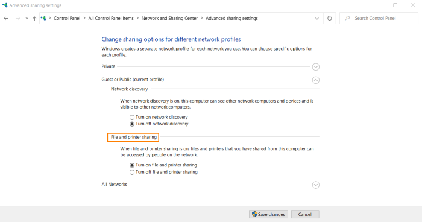

-p445: SMB
SMB → Server Message Block
SMB is a network protocol used by Windows-based computers that allows systems within the same
network to share files.
| layers |
TCP/IP |
ISO/OSI |
Protocols |
what they do |
| 7 |
Application |
Application |
SMB,DNS, FTP, LDP, Telent |
provides a user interface and determines the network services required |
| 6 |
Application |
Presentation |
SMB,HTTP, TLS/SSL |
presents data to the application layer; functions as a translator from computer to human readable form |
Samba software
Samba is a free software
re-implementation of the SMB protocol. The name Samba comes from SMB (
Server Message Block), the name of the proprietary
protocol used by the Microsoft Windows network file system.
NetBIOS over TCP/IP
Before Windows 2000, SMB traffic requires the NetBIOS over TCP (NBT) protocol to work on a TCP/IP
transport.
NetBIOS over TCP traditionally uses the following ports:
nbname 137/UDP
nbname
137/TCP
nbdatagram 138/UDP
nbsession 139/TCP
SMB over TCP/IP
From Windows 2000, SMB traffic can directly work on TCP/IP transport
Removing the NetBIOS
transport has several advantages, including:
• Simplifying the transport of SMB traffic.
• Removing WINS
and NetBIOS broadcast as a means of name resolution.
• Standardizing name resolution on DNS for file and
printer sharing.
If both the direct hosted and NBT interfaces are enabled, both methods are tried at the
same time and the first to respond is used. This allows Windows to function properly with operating systems that do
not support direct hosting of SMB traffic.
Direct hosted "NetBIOS-less" SMB traffic uses the
following port
SMB 445/TCP
On a Windows machine(from Windows Vista) is possible to
share a file or a directory on the network; this lets local and remote users access the resource and, possibly,
modify it.

{kind=link}